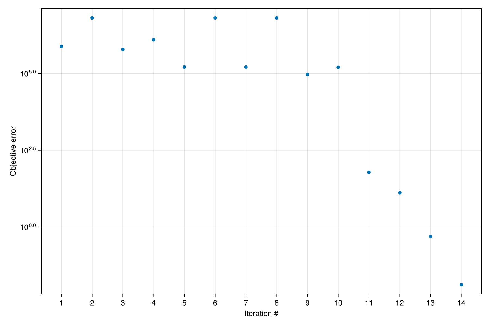

History matching of simulation models
We demonstrate history matching of a Direct Column Breakthrough (DCB) simulation model in Mocca. We leverage the powerful and flexible optimization functionality of Jutul to set up and perform the history matching. For more details about the DCB modelling, see the Simulate DCB example.
Import necessary modules
import Jutul
import MoccaWe create a function for setting up new simulation cases from the value of the parameter we wish to tune
function setup_case(prm, step_info=missing)
param_dict_symb = Dict(Symbol(k) => v for (k, v) in prm);
RealT = valtype(param_dict_symb);
constants, info = Mocca.parse_input(Mocca.haghpanah_DCB_input(); typeT=RealT)
for (k, v) in param_dict_symb
print(k)
print(v)
setproperty!(constants, Symbol(k), v)
end
case, = Mocca.setup_mocca_case(constants, info)
return case
end;Create synthetic reference data
constants_ref, = Mocca.parse_input(Mocca.haghpanah_DCB_input(); typeT=Float64)
prm_ref = Dict("v_feed" => constants_ref.v_feed);
case_ref = setup_case(prm_ref);v_feed0.37Configure simulator which will be used in the history matching
timestep_selector_cfg = (y=0.01, Temperature=10.0, Pressure=10.0)
sim, cfg = Mocca.setup_process_simulator(case_ref.model, case_ref.state0, case_ref.parameters;
timestep_selector_cfg = timestep_selector_cfg,
initial_dt = 1.0,
output_substates = true,
info_level = -1
);Run reference simulation to generate and generate "ground truth" data from the result
states, timesteps_out = Mocca.simulate_process(case_ref;
simulator = sim,
config = cfg
);
times_ref = cumsum(timesteps_out)
total_time = times_ref[end]
last_cell_idx = Jutul.number_of_cells(case_ref.model.domain)
qCO2_ref = map(s -> getindex(s[:AdsorbedConcentration], 1, last_cell_idx), states)
qCO2_ref_by_time = Jutul.get_1d_interpolator(times_ref, qCO2_ref);Setting up and solving the optimization problem
We define a suitable objective function to quantify the match between our simulations and the reference solution. Here we choose deviation of adsorbed CO2 in the last grid cell.
function objective_function(model, state, dt, step_info, forces)
current_time = step_info[:time]
q_co2 = getindex(state[:AdsorbedConcentration], 1, last_cell_idx)
q_co2_ref = qCO2_ref_by_time(current_time)
v = dt/total_time*(q_co2 - q_co2_ref)^2
return v
end;Perturb the known parameter $v_{feed}$ to form our initial guess for the optimization
prm_guess = Dict("v_feed" => constants_ref.v_feed+0.2);Activate $v_{feed}$ as a free parameter
dprm = Jutul.DictOptimization.DictParameters(prm_guess)
Jutul.DictOptimization.free_optimization_parameter!(dprm, "v_feed"; rel_min = 0.001, rel_max = 100.0)DictParameters with 1 parameters (1 active), and 0 multipliers:
Active optimization parameters
┌────────┬───────────────┬───────┬─────────┬──────┐
│ Name │ Initial value │ Count │ Min │ Max │
├────────┼───────────────┼───────┼─────────┼──────┤
│ v_feed │ 0.57 │ 1 │ 0.00057 │ 57.0 │
└────────┴───────────────┴───────┴─────────┴──────┘
No inactive optimization parameters.
No multipliers set.
Run the optimization
prm_opt = Jutul.DictOptimization.optimize(dprm, objective_function, setup_case;
config = cfg,
max_it = 10,
obj_change_tol = 1e-6,
solution_history = true
);Optimization: Starting calibration of 1 parameters.
Optimization: Setting up adjoint storage.
Optimization: Finished setup in 6.852145792 seconds.
Optimization: Adjoint solve took 4.395211208 seconds.
Optimization: Objective #1: 7.61286e+05, gradient 2-norm: 4.71893e+06
It. | Objective | Proj. grad | Linesearch-its
-----------------------------------------------
0 | 1.6133e-01 | 5.6999e+01 | -
Optimization: Adjoint solve took 0.300336194 seconds.
Optimization: Objective #2: 6.36994e+06 (f/f0=8.367e+00), gradient 2-norm: 1.21894e-04
Optimization: Adjoint solve took 3.537066138 seconds.
Optimization: Objective #3: 6.05491e+05 (f/f0=7.954e-01), gradient 2-norm: 5.00075e+06
Optimization: Adjoint solve took 4.823857062 seconds.
Optimization: Objective #4: 1.24529e+06 (f/f0=1.636e+00), gradient 2-norm: 6.30573e+06
Optimization: Adjoint solve took 3.536751918 seconds.
Optimization: Objective #5: 1.60276e+05 (f/f0=2.105e-01), gradient 2-norm: 4.25403e+06
Optimization: Adjoint solve took 0.300208446 seconds.
Optimization: Objective #6: 6.36994e+06 (f/f0=8.367e+00), gradient 2-norm: 1.21894e-04
LBFGS: Line search unable to succeed in 5 iterations ...
Optimization: Adjoint solve took 3.284681324 seconds.
Optimization: Objective #7: 1.60276e+05 (f/f0=2.105e-01), gradient 2-norm: 4.25403e+06
LBFGS: Resetting 'm' to number of parameters: m = 1
1 | 3.3964e-02 | 5.6999e+01 | 5
Optimization: Adjoint solve took 0.27268215 seconds.
Optimization: Objective #8: 6.36994e+06 (f/f0=8.367e+00), gradient 2-norm: 1.21894e-04
Optimization: Adjoint solve took 3.312106027 seconds.
Optimization: Objective #9: 9.17200e+04 (f/f0=1.205e-01), gradient 2-norm: 3.55824e+06
2 | 1.9437e-02 | 5.1384e+01 | 2
Optimization: Adjoint solve took 3.327966723 seconds.
Optimization: Objective #10: 1.56515e+05 (f/f0=2.056e-01), gradient 2-norm: 6.37615e+06
Optimization: Adjoint solve took 3.233064687 seconds.
Optimization: Objective #11: 5.98917e+01 (f/f0=7.867e-05), gradient 2-norm: 1.18220e+05
3 | 1.2692e-05 | 4.2980e+01 | 2
Optimization: Adjoint solve took 3.248980144 seconds.
Optimization: Objective #12: 1.30250e+01 (f/f0=1.711e-05), gradient 2-norm: 4.91360e+04
4 | 2.7602e-06 | 1.4280e+00 | 1
Optimization: Adjoint solve took 3.247952644 seconds.
Optimization: Objective #13: 4.89064e-01 (f/f0=6.424e-07), gradient 2-norm: 1.02865e+04
5 | 1.0364e-07 | 5.9351e-01 | 1
Optimization: Adjoint solve took 3.268358859 seconds.
Optimization: Objective #14: 1.31567e-02 (f/f0=1.728e-08), gradient 2-norm: 1.63327e+03
6 | 2.7881e-09 | 1.2425e-01 | 1
Optimization: Finished in 68.023038687 seconds.We can see a clear reduction of the objective function value throughout the optimization iterations, indicating a close match between the reference solution and our simulation.
f = Mocca.plot_optimization_history(dprm)
We can look at the optimization result:
dprmDictParameters with 1 parameters (1 active), and 0 multipliers:
Active optimization parameters
┌────────┬───────────────┬───────┬─────────┬──────┬─────────────────┬────────┐
│ Name │ Initial value │ Count │ Min │ Max │ Optimized value │ Change │
├────────┼───────────────┼───────┼─────────┼──────┼─────────────────┼────────┤
│ v_feed │ 0.57 │ 1 │ 0.00057 │ 57.0 │ 0.37 │ -35.0% │
└────────┴───────────────┴───────┴─────────┴──────┴─────────────────┴────────┘
No inactive optimization parameters.
No multipliers set.
and see that the value matches the reference parameter value
constants_ref.v_feed0.37Check size of objective mismatch
dprm.history.objectives14-element Vector{Float64}:
761285.8833491696
6.369944548281407e6
605490.5988767222
1.2452850490274746e6
160276.16543350072
6.369944548281407e6
160276.16543350072
6.369944548281407e6
91720.04717463219
156514.61420140337
59.8916510935571
13.024970005004135
0.48906387349270003
0.013156736829874468Example on GitHub
If you would like to run this example yourself, it can be downloaded from the Mocca.jl GitHub repository.
This page was generated using Literate.jl.